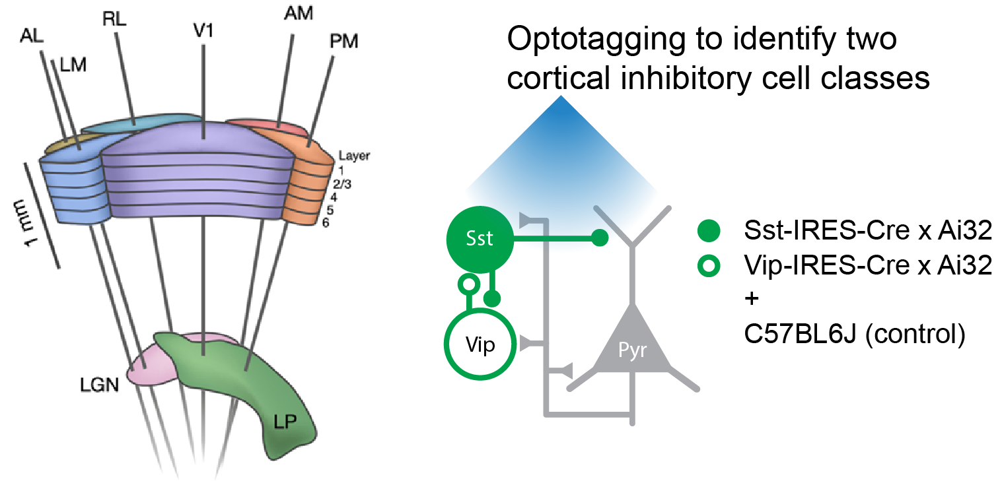
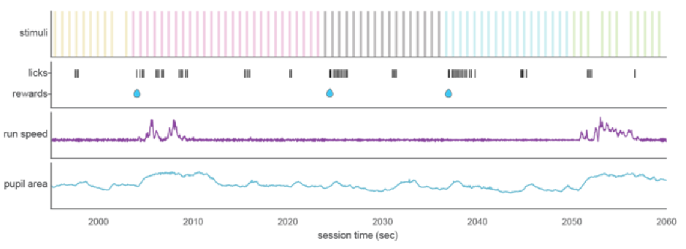
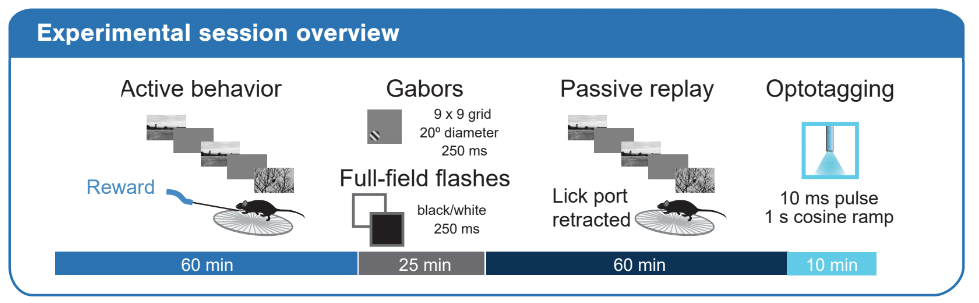
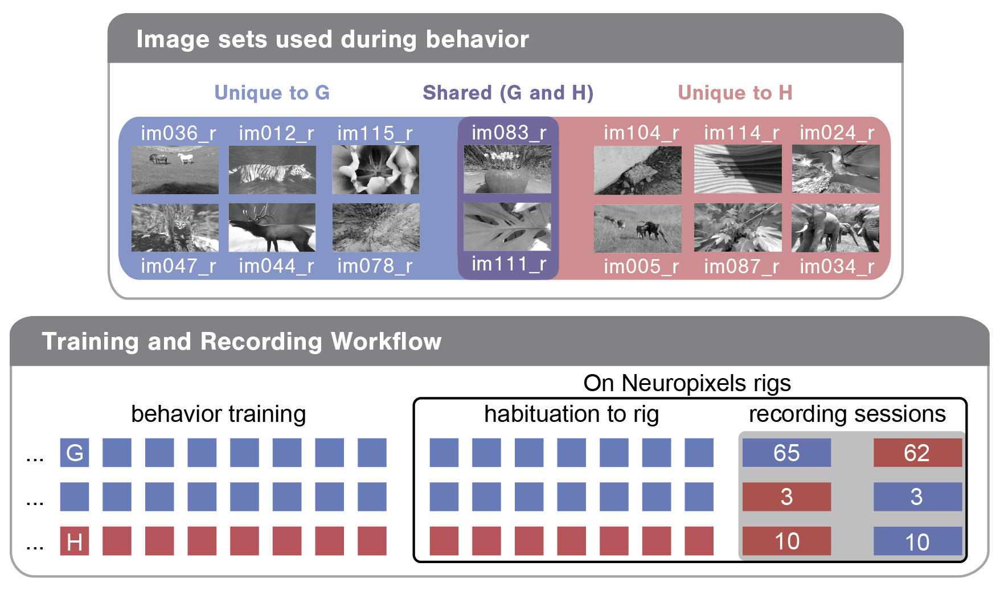

Visual Behavior Neuropixels#
The Visual Behavior Neuropixels dataset consists of electrophysiological recordings of neural activity in mice performing a visual change detection task. Each experiment includes data from up to six Neuropixels probes recording simultaneously in cortex, hippocampus, thalamus and midbrain, while mice were exposed to different sensory and behavioral contexts, including familiar and novel stimuli, as well as active and passive stimulus blocks. Data for each experiment is packaged in Neurodata Without Borders (NWB) files that can be accessed via AllenSDK.
Technique#
This dataset includes multi-regional Neuropixels recordings from up to 6 probes at once. The probes target six visual cortical areas including VISp, VISl, VISal, VISrl, VISam, and VISpm. In addition, multiple subcortical areas are also typically measured, including visual thalamic areas LGd and LP as well as units in the hippocampus and midbrain.
Recordings were made in three genotypes: C57BL6J, Sst-IRES-Cre; Ai32, and Vip-IRES-Cre; Ai32. By crossing Sst and Vip lines to the Ai32 ChR2 reporter mouse, we were able to activate putative Sst+ and Vip+ cortical interneurons by stimulating the cortical surface with blue light during an optotagging protocol at the end of each session.

To relate these neurophysiological recordings to mouse behavior, the timing of behavioral responses (licks) and earned rewards were also recorded, as well as mouse running speed, eye position and pupil area. In addition, videos were taken from front and side views to capture motor activity like grooming, whisking and postural adjustments.

Experiment design#

Every experimental session consisted of the following stimulus epochs (in order):
Active behavior block: the mouse performed a visual change detection task. The images used during this block came from one of two image sets of 8 natural images (G or H, as shown below). On one recording day, mice were exposed to the same image set they had seen during behavior training (‘Familiar’ sessions). On the other recording day, mice were shown a novel image set (‘Novel’ sessions). Note however, that two images were shared across these image sets and thus familiar on both sessions. Images were presented for 250 ms, with a 500 ms gray screen between images. During recording sessions, images were omitted (resulting in a gray screen) with a probability of 5%. However the change image, the image immediately preceding the change and the image immediately following an omission were never omitted, producing an actual omission probability of ~3%. At the end of this block, the lick spout was retracted for the remainder of the session.
Gabor stimuli: Gabor stimuli windowed to have a 20 degree diameter were presented in a 9x9 grid to map receptive fields. Grid positions were spaced by 10 degrees. Gabors had a temporal frequency of 4 Hz, a spatial frequency of 0.08 cycles/degree and were shown at 3 orientations (0, 45, 90 degrees). They were 250 ms in duration without gaps between stimuli. There were 15 trials for each condition (81 positions, 3 orientations).
Spontaneous: Following the gabor stimuli there was a brief gray screen (5 minutes)
Full-field flashes: Full-field flashes were black or white at 80% contrast. They were 250 ms in duration with 2 seconds between flash starts. There were 75 trials for each condition (light and dark flashes).
Passive replay: The stimulus encountered by the mouse during the active behavior block was replayed frame-for-frame. Note however that the lick spout was retracted for this block and the mouse was therefore unable to earn rewards.
Optotagging: Optotagging epoch during which we stimulated the surface of the brain with blue light to activate ChR2-expressing cortical interneurons
The video below shows brief snippets of each of the stimuli described above. Note that a spherical warping was applied to all stimuli to ensure that the apparent size, speed, and spatial frequency were constant across the monitor as seen from the mouse’s perspective. The images shown below have not been warped, and thus appear windowed at the corners.
To allow analysis of stimulus novelty on neural responses, two different images sets were used in the recording sessions: G and H (diagrammed below). Both image sets comprised 8 natural images. Two images were shared across the two image sets (purple in diagram), enabling within session analysis of novelty effects. Mice took one of the following three trajectories through training and the two days of recording:
Train on G; see G on the first recording day; see H on the second recording day
Train on G; see H on the first recording day; see G on the second recording day
Train on H; see H on the first recording day; see G on the second recording day
The numbers in the Training and Recording Workflow bubble below give the total recording sessions of each type in the dataset.
